Revisiting Software Fundamentals for AI
I am not going to write the post that tells you AI cannot code. I have watched it write things I would have taken an afternoon to write, in the time it takes to read the result. That is a real change and pretending otherwise is not scepticism, it is nostalgia.
What I want to write about is a category error I keep meeting. People talk about AI as though it removed the cost of change. It did not. It removed part of the cost of producing. Those are different costs, and confusing them is the most expensive mistake available to a team right now.
Everything below is an old idea. That is the point. None of these were secrets before 2022, none of them are less true now. All of them are harder to apply when generating the wrong thing takes ten seconds instead of a day.
DRY is an entropy problem, not a speed problem
The usual criticism of duplication is that it is slow to type. That is the least interesting thing about it. Duplication is a storage problem. Every copy of a fact is a place that fact can diverge. The number of places you have to look to answer one question grows with every copy you keep.
This is why AI does not fix it. No amount of enforced vocabulary fixes it either. I have watched agents run inside long, careful ontologies: glossaries, domain models, instructions that define what a “customer” is and is not. They still redefine the concept three files later. The ontology is not consulted at the moment of writing. It is read, summarised, and quietly overwritten by the shape of the code that already exists. You cannot prompt an agent out of entropy. Entropy is not an attitude. It is what happens to a system with no force acting against it.
But de-duplication is not free either. Extracting a shared abstraction is a bet that two things are the same for the same reason and will keep changing together. Plenty of the worst code I have read was DRY taken as a law: one heroic interface stretched over four uses that only looked alike.
So treat it as an ideal on a continuum, not a command. The rule of three is a serviceable upper bound on duplication. Tolerate the first copy. Notice the second. Consider unifying at the third, when you finally have enough evidence to see what is genuinely shared. Sometimes the honest answer is a little duplication and a comment explaining why the pieces must stay apart.
Readability is not a matter of taste, and not something the output can settle
The argument I hear most is that readership is over. The end user only sees behaviour, so who cares whether the code is legible?
It is true that you can launch a demo this way. Demos are short-lived and have one author, and nobody has to keep them alive. What you cannot do is maintain the thing. Or onboard a developer onto it. Or hand it to a team making a change under pressure at eleven at night. Readability is not decoration laid over working software. It is the property that determines whether the next change is possible.
You can negotiate how much understanding you need before you try something. That is what tiering frameworks, risk levels and maturity models are for, and they are useful. But they do not remove effort; they only move it. A tier-one review that skips understanding does not delete the work of understanding. It defers it, to the person who inherits the code, who will do it with less context and worse information.
And we know what deferred understanding costs. Decades of research on software defects keeps returning the same shape. A severe problem found after delivery costs far more to fix than one caught in requirements and design. Not because the typing is harder. Because by then the understanding has to be bought again, by somebody with less context, under more pressure. That is not a vibe. It is friction, and friction has a price.
Naming is the cheapest thing to fix and the most expensive thing to skip
Names are documentation that cannot go stale without someone noticing. They are also the hardest thing to retrofit. By the time a name is wrong, it is wrong in fifty call sites and in the heads of everyone who reads it.
AI is very good at plausible names. Handler, manager, service, data, utils — these appear because they are statistically safe, not because they are true. Each one makes the next reader reconstruct the meaning from the body of the function. That is exactly the work the name was supposed to save. The cost is small per instance, which is why it survives review, and it compounds in the same way duplication does.
A name that says what a thing is is the cheapest correctness you will ever buy. If the honest name is hard to find, that is usually a design smell announcing itself. It is much cheaper to hear it now than after the module has three consumers.
Sequencing: the horse, the cart, and the question nobody asked
This is the one I have found most surprising in practice. AI can generate a large amount of correct-looking work in the wrong order. It will couple things that should be independent. It will reach for a shared service before the second caller exists. It will solve the problem in front of it without asking who the problem is for. That last omission is the expensive one. “Who are we designing this for?” is not a warm-up question. It determines the whole shape of the answer, and it is exactly the question an agent will not ask unless you make it.
The coupling preference is the one that has cost me most. Ask for infrastructure and you will very often get coupling where decoupling was available. Resources that cannot be removed without taking the network with them. Names baked into three places. A module that quietly assumes it is the only tenant. It is not wrong, exactly. It is workable, in the way that a knot is workable. Somebody then has to support that Terraform, and the team pays for it in productivity stolen from them by a design nobody chose. The cost shows up as slowness rather than failure, which is exactly why it survives review.
I hit this even on a golf game, of all things. I asked for something with a clear sequence: a shot, then a lie, then the next shot. The model kept losing track of which state followed which. So I stopped asking it for the game. I asked it for a tool instead: something a person could use to write acceptance tests, exporting scenarios as declarative JSON. With my guidance that works. Without it, the model reaches past the simple version and grabs a complicated one. Then it builds the complexity into the place where the simple version would have been enough.

The pattern generalises. Put the cheap-making things first: the acceptance scenario, the failing test, the name, the seam. Then later steps are constrained by earlier ones. Reverse the order and every step is unbounded, so the model fills the space with whatever is statistically nearby. The plan is not paperwork around the work. On a team using AI, the plan is the work. It is the only part that can be wrong in a way you can see before the code exists.
The myth of infinite capacity
You will hear that AI gives us infinite capacity, infinite income, infinite potential. I have come to read that claim as a signal about the person making it rather than a description of the world. It is said almost exclusively by people who have never had to operate anything at scale. Or by people borrowing from an org they happened to be part of, generally in a non-delivery capacity.
There is no infinity, because there are scaling factors and they are physical. You can shrink the box, but there is a floor. A Planck length. A thermal limit. A speed of light. An error rate that compounds. A coordination cost that grows faster than the headcount. The reason an amoeba does not build a self-landing rocket is not that it lacks ambition. It is that the constraints do not care about ambition.
The people who understand this best are not shipping higher-level features. They are the ones grinding at the bottom of the stack, where a few percent of speed costs real money and real years. That is the tell. When someone promises you infinite capacity, ask them what it costs to make the last five percent faster. If they do not know, they are not describing engineering. They are describing a pitch.
What AI is genuinely good for: deterministic meta-programs
I want to give AI its due, because the case for it is real and it is not the case being sold.
Used well, it improves developer experience substantially. Generating documentation. Producing entity relationship diagrams that can be regenerated on command. Keeping the boring artefacts in step with the code. It does this faster than any typing speed, and it does not get bored. That is a genuine gift, and refusing it on principle is its own kind of waste.
But here is the thing I would like to assure you of. The way to keep that gift, without paying the maintenance bill forever, is to ask for deterministic meta-programs. Not another prompt. A program that understands your code, your configuration and your conventions, and works with them. Programs that read the repository and emit the diagram, the docs, the index, the migration. Programs whose output you can diff, whose behaviour you can test, and whose failure is loud rather than plausible.
Once those exist, the LLM becomes a user of them rather than their replacement. It can call the generator through a skill, or iterate on the codebase from a source-controlled standpoint where every change is a commit. From there the safety properties are ordinary and old. One commit away from adding a feature for everyone. One revert away from returning to a known state. One bisect away from finding where the undesired behaviour arrived. You have the speed of the model and the guarantees of version control. You have reduced your dependency on the model rather than deepened it.
The fundamentals did not change
None of this is a case against AI. It is a case for keeping the things that were already true. Reduce duplication, but know when two things only look alike. Write for the next reader, because they will be the one changing it. Name things honestly. Put the cheap-making steps first, and ask who the work is for before you ask for the work. Refuse the arithmetic of infinity, and prefer the boring deterministic tool you can test over the clever prompt you cannot.
The tools got faster. The bill still arrives, and it still arrives later, to somebody who was not in the room.
Further reading
- Rule of three (computer programming) — a heuristic bound on how much duplication to tolerate before unifying.
- Rubrics — A Lightweight Decision Framework — the companion piece, if you want a way to write these judgements down before you argue about them.